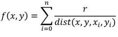

Happy Friday! We hope you had a nice and productive week at work and now you’re looking forward to a nice
and entertaining weekend. For this reason, please allow us to add to your entertainment sources a new recreational coding challenge!
Coding Challenge
This weekend we’re serving metaballs! This is not a fancy dish, but a computer visualization that you can do
in JavaScript on a canvas! All the ingredients are included with your computer, while the steps are provided below:
Setup yourself a nice canvas of a decent resolution. Try a smaller resolution first since this program
will run pretty "hot" on resources.
Consider a few virtual balls that are bouncing around the screen (balls are virtual – you don’t need to
render them). These balls will have their centers at (xi, yi) and radius
r.
For each frame, calculate the result of the following formula for each pixel (x, y) in the
frame. In this formula the xi, yi are the coordinates of the virtual balls,
and r their radius.

Pixel Formula
Since you’re looping over all pixels of canvas in a frame, your CPU will get hot! Choose a decently
small size, to prevent overheating!
Map the result of this function to a color Hue and plot the pixel!
You need to work in HSL / HSV mode instead of RGB. Set the Saturation and Lightness to constant value
(maximum) and then just manipulate the Hue.
(Hue goes from 0 to 360… therefore map the above sum to the
0...360 interval)
Tune the parameters to change the visualization:
We suggest to change the radius of virtual balls … try something small, then something gigantic!
You can also try to change the mapping of the sum to the color for a totally different effect.
Instead of mapping to 0...360, map to a different interval.
Try also to increase the canvas. If program becomes slow, use small "rectangles" or "circles"
instead of pixels, in order to keep the discrete resolution low on a big canvas.